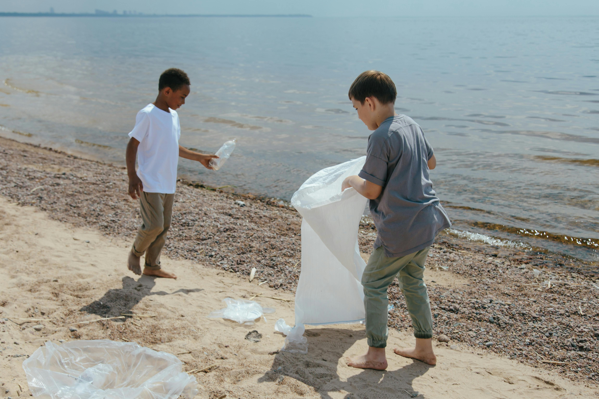

Resources

Photo by Ron Lach: Pexels.
Images
- Cagr KANMAZ. "Plastic Waste and Pollution Floating on Contaminated Water" 2021. Pexels.com. Accessed October 14, 2024.
- Dhilip Antony. "Close-up of a Bottle Floating in the Water" 2022. Pexels.com. Accessed October 14, 2024.
- Ron Lach. "Boys Collecting Garbage at the Beach" 2020. Pexels.com. Accessed October 14, 2024.